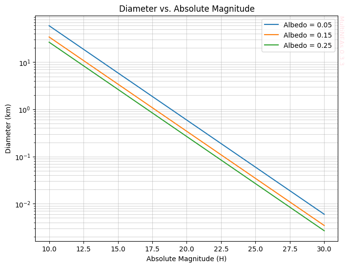

MultiNEAs: The population.Asteroid Class Tutorial
This notebook demonstrates how to use the multineas.population.Asteroid class for converting between asteroid diameter and absolute magnitude.
Installation
If you’re running this in Google Colab or need to install the package, uncomment and run the following cell:
[1]:
try:
from google.colab import drive
%pip install -Uq multineas
except ImportError:
print("Not running in Colab, skipping installation")
# Uncomment to install from GitHub (development version)
# !pip install git+https://github.com/seap-udea/MultiNEAs.git
Not running in Colab, skipping installation
Load the Package
Import multineas.population and matplotlib.pyplot:
[2]:
%load_ext autoreload
%autoreload 2
import numpy as np
import matplotlib.pyplot as plt
from multineas.population import Asteroid
import warnings
%matplotlib inline
warnings.filterwarnings("ignore")
from multineas.plot import multineas_watermark
Welcome to MultiNEAs v0.3.1
Convert Absolute Magnitude to Diameter
We can use Asteroid.hmag_to_diameter to convert absolute magnitude (\(H\)) to diameter (\(D\)). The default albedo is 0.15.
[3]:
H = 18.0
diameter = Asteroid.hmag_to_diameter(H)
print(f"For H = {H}, Diameter = {diameter:.3f} km")
For H = 18.0, Diameter = 0.862 km
You can also specify a different albedo:
[4]:
albedo = 0.05
diameter_low_albedo = Asteroid.hmag_to_diameter(H, albedo=albedo)
print(f"For H = {H} and albedo = {albedo}, Diameter = {diameter_low_albedo:.3f} km")
For H = 18.0 and albedo = 0.05, Diameter = 1.493 km
Convert Diameter to Absolute Magnitude
Conversely, use Asteroid.diameter_to_hmag to convert diameter to absolute magnitude.
[5]:
D = 1.0 # km
H_calc = Asteroid.diameter_to_hmag(D)
print(f"For Diameter = {D} km, H = {H_calc:.3f}")
For Diameter = 1.0 km, H = 17.677
Visualization
Let’s plot the relationship between H and Diameter for different albedos.
[6]:
H_values = np.linspace(10, 30, 100)
albedos = [0.05, 0.15, 0.25]
fig, ax = plt.subplots(figsize=(8, 6))
for p_v in albedos:
D_values = Asteroid.hmag_to_diameter(H_values, albedo=p_v)
ax.plot(H_values, D_values, label=f"Albedo = {p_v}")
ax.set_xlabel("Absolute Magnitude (H)")
ax.set_ylabel("Diameter (km)")
ax.set_yscale("log")
ax.set_title("Diameter vs. Absolute Magnitude")
ax.legend()
ax.grid(True, which="both", ls="-", alpha=0.5)
multineas_watermark(ax)
plt.show()

Attribution
The Asteroid class is part of the multineas package.